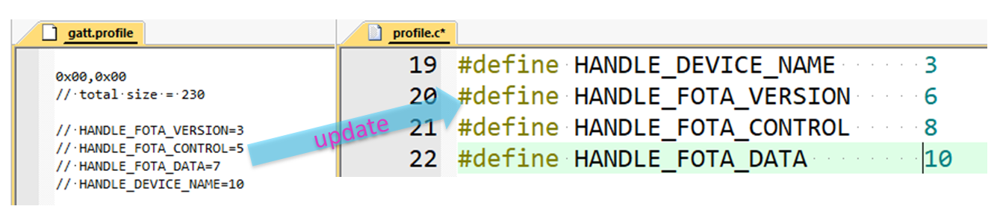

SDK 6.2 & 6.3 除了修正了几个 bug 外，更主要的是增加了一系列新功能。
1. 软件包 (Bundles)
1.1 Controller
- [新增]
LL_FLAG_LEGACY_ONLY_SCANNING(6.2.1)
ING918xx 全系列支持扩展广播的发送和接收。如果待扫描的广播为发送频率很低的 4.x Legacy 广播， 相同参数配置下 ING918xx 的接收成功率可能比 4.x 芯片差。这个标志位可以解决此问题：启用后， Controller 将只扫描潜在的 Legacy 广播。
1.2 Host - GAP 模块
- [更新]
gap_aes_encrypt(6.2.0)
大多数 GAP API 可以与蓝牙 HCI 接口一一对应。但是对于 gap_aes_encrypt 而言，这种设计存在明显的不足：
多个模块都在使用该函数时，无法识别响应的归属。现在接口里增加了 gap_hci_cmd_complete_cb_t
回调参数以解决此问题：
/**
* @brief Encrypt the Plaintext_Data in the command using the Key given in the command and
* returns the Encrypted_Data to the Host. The AES-128 bit block cypher is
* defined in NIST Publication FIPS-197.
* @param key Key, 16 Octets.
* 0x1234.... is represented by {0x12, 0x34, ...}
* @param plaintext Plaintext_Data, 16 Octets
* 0x1234.... is represented by {0x12, 0x34, ...}
* @param cb callback function on the corresponding command complete event
* @param user_data user data for the callback function
* @return 0: Message is sent out; Other: Message is not sent out
*/
uint8_t gap_aes_encrypt(const uint8_t *key, const uint8_t *plaintext,
gap_hci_cmd_complete_cb_t cb,
void *user_data);
1.3 Host - SM 模块
从 6.2.0 开始，SM 模块支持多个连接使用独立的参数配置：使能、IO 能力、认证参数（BONDING、MITM 保护），
而且多个连接之间的 SM 协议流程并发执行。相应地，新增了 sm_config_conn 用于配置单个连接的参数，并修改了
sm_config。
- [新增]
sm_config_conn(6.2.0)
/**
* @brief Security configuration of a connection
*
* Note: This function can only be used in HCI event handler of `HCI_SUBEVENT_LE_ENHANCED_CONNECTION_COMPLETE`
*
* @param[in] con_handle handle of an existing connection
* @param[in] io_capability IO Capabilities
* @param[in] auth_req requested authentication requirements
*/
void sm_config_conn(hci_con_handle_t con_handle,
io_capability_t io_capability,
uint8_t auth_req);
- [更新]
sm_config(6.2.0)
/**
* @brief Security configurations
*
* @param[in] enable Enable (Bypass) SM (default: Disabled)
* When disabled, SM can be enabled per connection by `sm_config_conn`.
* @param[in] io_capability Default IO Capabilities
* @param[in] request_security Let peripheral request an encrypted connection right after connecting
* Not used normally. Bonding is triggered by access to protected attributes in ATT Server
* @param[in] persistent persistent data for security & privacy
*/
void sm_config(uint8_t enable,
io_capability_t io_capability,
int request_security,
const sm_persistent_t *persistent);
1.4 le_device_db
从 6.2.0 开始，开放了名为 le_device_db 的模块。开发者可利于其中的 API 查找、管理配对信息。
1.5 FreeRTOS 相关
- 更准确的软件定时器 (6.3.3)
从 6.3.3 开始，Tick 频率（configTICK_RATE_HZ）配置为 1024 Hz.
旧版 configTICK_RATE_HZ 配置为 1000 Hz。由于 ING918xx 32K 时钟标称频率为 32768 Hz，SysTick 会被配置为每
\((\lfloor 32768 / 1000 \rfloor =) 32\) 个周期生产一个 Tick 中断，所以 Tick 的标称频率为 \((32768 / 32 =) 1024\) (Hz)。
- [新增] vTaskSuspend, vTaskResume, xTaskResumeFromISR (6.3.1)
加入了 3 个用于暂停、恢复任务的 API。
1.6 SoC 相关
- [更新]
platform_shutdown(6.3.1)
当时长为 0 时，系统将一直处于关闭状态，直至出现 EXT_INT 唤醒信号。
2. 库函数
2.1 Trace
- [新增]
trace_full_dump(6.2.1)
遇到死机问题时，需要抓取内存转储。对于无法使用调试器的场景，可以使用 这个函数从其它途径（比如 UART）导出。
将这个函数放到 PLATFORM_CB_EVT_HARD_FAULT、PLATFORM_CB_EVT_ASSERTION
等事件的回调里，就能实现自动转储。UART GATT Console 示例演示了这个函数的用法，通过串口输入 assert
可主动触发 ASSERTION 并自动转储。
2.2 FreeRTOS Util
- [新增]
vTaskDelayUntil(6.3.3)
平台软件包在编译 FreeRTOS 时未包含 vTaskDelayUntil。这里重新实现了该函数，两者功能近乎完全一致。
- [新增]
AccurateMS_TO_TICKS(6.3.3)
ING918xx 32K 时钟的频率与标称值之间存在偏差。pdMS_TO_TICKS 在转换时不考虑此偏差。一般情况下，
其精度已经足够。AccurateMS_TO_TICKS 在转换时考虑了时钟的实际频率，比 pdMS_TO_TICKS 的精度更高。
调用 vUpdateTicksClockFrequency 以更新 AccurateMS_TO_TICKS 所使用的实际频率。
相关 API 的使用可参考 Peripheral Battery。
3. SDK 工具
3.1 Wizard
- [新增] 同步生成 GATT、ADV 常量 (6.3.2)
以往版本中，使用工程向导创建新的 Peripheral 类型的工程时，会在 profile.c 自动生成 GATT 句柄常量。
这种方法存在缺点：如果后续又编辑了 Profile 数据，代码里的常量无法相应地自动更新，需要从根据 gatt.profile
末尾的内容手动更新常量定义，烦琐且易出错：

从 6.3.2 开始，这些常量改为在一个单独的 gatt.const 文件里定义，用 Wizard 编辑 Profile 数据时，
常量定义会自动与之同步。
gatt.const 除了定义了各特征的句柄常量，还定义了各特征的值在 Profile 数据里的偏移。
从 6.3.2 开始，Wizard 还会广播数据生成各数据项的偏移，分别保存在 advertising.const 和 scan_response.const
文件里。
- 1. 新建一个 Peripheral 类型的工程；
- 2. 将新工程 "data/" 目录下 "*.tmpl" 文件复制到现有项目的 "data/" 目录下；
- 3. 在 Wizard 编辑现有项目的广播、Profile 数据，保存之后，常量定义就会自动生成；
- 4. 从现有代码里删除对应常量的定义，改为使用 ".const" 文件里的定义。